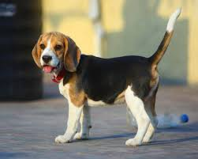
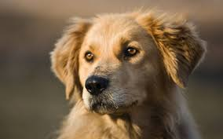

|
Собака – не лише вірний друг людини, але й член родини, який сам про себе не подбає і потребує догляду. Плануєте, чи тільки но обзавелися хвостатим товаришем, обов’язково потрібно навчитися правильно за ним доглядати. Не має значення – породистий це пес чи дворняжка. Doggy helpers зібрала основні рекомендації по догляду за собаками всіх порід і підготувала актуальні знижки до 60% на повний комплекс грумінг послуг і кешбек до 15% на корисні товари для тварин. |
Харчування, що унікальне, як і ваш собака. Від 3-кілограмового Папільйона до 90-кілограмового Мастіфа, собаки різних розмірів мають різні фізіологічні потреби, що може ускладнити вибір оптимального корму. Ось чому Doggy helpers враховує розміри тварини, щоб якнайкраще задовольнити харчові потреби вашого собаки.  |
Окрім собак різних порід є і прості, Їх назвають дворняжками. Якщо вони не мають батьків королівського роду, це не означає, що їх не можна любити. Це також милі та вірні члени сім'ї. Вони дуже розумні та добрі, та часто в них немає дому. Люди вважають якщо в них немає королівського роду то і заводити їх не треба, та це не так. Всетаки деякі люди люблять та мають дворняг, та дуже ними гордяться так ці пси дуже вірні розумні та дружелюбні.  |